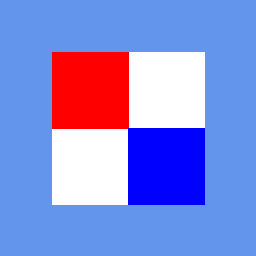
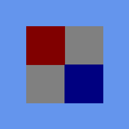
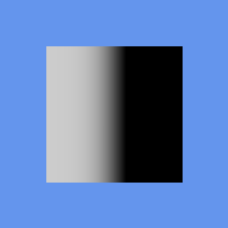

Tutorial 32: BasicEffect and 3D Lighting
What you’ll learn
- The
BasicEffectproperty surface at a glance. - Configuring the three directional lights, ambient colour and
EnableDefaultLighting(). - Diffuse and emissive colour, and the
VertexColorEnabled/TextureEnabledswitches.
Before you start — Tutorial 31: Your First 3D Triangle — this expands the effect you already used to draw one triangle. Requires a 3D-capable renderer such as OPENGLES3 or VULKAN; the 2D-only renderers (SDL_RENDERER, DIRECT2D, CANVAS, HTML_DOM, SKIA, BLEND2D, FREEDIRECT, DIRECTX1, GDI, SVG_DOM, OPENVG) throw on 3D calls.
Colour convention: Lighting properties on BasicEffect (AmbientLightColor, DiffuseColor, EmissiveColor, light colours) use Vector3(R, G, B) with components in the range 0–1. This is different from the Color struct used in 2D, which packs R/G/B/A as bytes 0–255.
BasicEffect Properties Overview
BasicEffect is the standard shader bundled with CNA, modelled directly on XNA's BasicEffect. It handles the most common rendering scenarios without requiring a custom GLSL/HLSL shader. Its properties fall into four groups:
| Group | Key Setters |
|---|---|
| Transform | setWorld, setView, setProjection |
| Lighting | setLightingEnabled, setAmbientLightColor, DirectionalLight0/1/2, EnableDefaultLighting() |
| Material | setDiffuseColor, setEmissiveColor, setAlpha |
| Mode | setVertexColorEnabled, setTextureEnabled, setTexture |
All properties are accessed through getter/setter methods. Changes take effect on the next pass.Apply() call.
LightingEnabled
Call setLightingEnabledProperty(true) to activate the Blinn-Phong lighting model. Without it the shader ignores all light and simply renders the raw DiffuseColor (or vertex colour if VertexColorEnabled). Lighting also requires VertexPositionNormalTexture or another vertex type that carries a normal — without a normal the GPU has no surface direction to shade.
effect_->setLightingEnabledProperty(true); // activate lighting pipeline
// effect_->setLightingEnabledProperty(false); // flat colour — no normals neededLighting off, lighting on, lighting per pixel
The frames below are from CNA's XNA oracle corpus (tools/xna-oracle/) — genuine Microsoft XNA 4.0 runtime output, diffed against CNA's DIRECTX9 renderer at --tolerance 0. The first two are the same textured quad with lighting disabled and then enabled; the third is a separate scene showing what PreferPerPixelLighting buys you.

Lighting disabled — the texture is passed through at full intensity. Real XNA 4.0 output; CNA's DIRECTX9 renderer matches it pixel-for-pixel.

Lighting enabled — every texel is scaled by the light term, darkening the whole face. Real XNA 4.0 output; CNA's DIRECTX9 renderer matches it pixel-for-pixel.

A per-pixel-lit surface — the light term is evaluated per fragment, giving a smooth falloff instead of a flat value interpolated from four corners. Real XNA 4.0 output; CNA's DIRECTX9 renderer matches it pixel-for-pixel.
DirectionalLight0/1/2 Setup
BasicEffect supports exactly three directional lights (DirectionalLight0, DirectionalLight1, DirectionalLight2). Each is infinite distance — it casts parallel rays with no falloff. The direction vector points from the light source toward the scene (i.e. the direction light travels).
// Key light: warm sun from upper-right
auto& sun = effect_->DirectionalLight0;
sun.setEnabledProperty(true);
sun.setDirectionProperty(Vector3::Normalize(Vector3(1.0f, -1.0f, -0.5f)));
sun.setDiffuseColorProperty(Vector3(1.0f, 0.95f, 0.8f)); // warm white
sun.setSpecularColorProperty(Vector3(0.9f, 0.9f, 0.8f));
// Fill light: cool blue from the left
auto& fill = effect_->DirectionalLight1;
fill.setEnabledProperty(true);
fill.setDirectionProperty(Vector3::Normalize(Vector3(-1.0f, -0.3f, 0.5f)));
fill.setDiffuseColorProperty(Vector3(0.3f, 0.4f, 0.6f)); // cool blue
fill.setSpecularColorProperty(Vector3(0.0f, 0.0f, 0.0f)); // no specular on fill
// Rim light: white from behind
auto& rim = effect_->DirectionalLight2;
rim.setEnabledProperty(true);
rim.setDirectionProperty(Vector3::Normalize(Vector3(0.0f, 0.5f, 1.0f)));
rim.setDiffuseColorProperty(Vector3(0.5f, 0.5f, 0.5f));
rim.setSpecularColorProperty(Vector3(0.2f, 0.2f, 0.2f));AmbientLightColor
Ambient light adds a constant base colour to every fragment regardless of surface normal. Keep it low (0.05–0.2 per channel) — too high and the scene looks washed out with no shadows. It's the minimum light that reaches every surface.
// Slightly warm ambient — prevents pure black shadows
effect_->setAmbientLightColorProperty(Vector3(0.15f, 0.12f, 0.10f));EnableDefaultLighting()
A convenience method that configures all three lights and the ambient to a set of XNA-standard defaults: a bright white key from upper-right, a dim blue fill from the left, and a very soft back. Good starting point for quick prototypes.
effect_->EnableDefaultLighting();
// Override just the key-light colour afterward:
effect_->DirectionalLight0.setDiffuseColorProperty(Vector3(1.0f, 0.9f, 0.7f));DiffuseColor
setDiffuseColorProperty(Vector3) is the base material colour. It multiplies the incoming light colour per-channel. If texturing is enabled it modulates the texture sample instead.
effect_->setDiffuseColorProperty(Vector3(0.8f, 0.2f, 0.2f)); // reddish materialEmissiveColor
setEmissiveColorProperty(Vector3) adds a constant colour to every fragment after lighting, regardless of light direction or shadow. Use it for glowing objects — a lava rock, a neon sign, an LED. It adds to the final colour, so keep it moderate.
// Faint orange glow (lava)
effect_->setEmissiveColorProperty(Vector3(0.4f, 0.1f, 0.0f));VertexColorEnabled and TextureEnabled
BasicEffect has three surface colour modes. Only one can be active at a time:
| Mode | Setter | Vertex type needed |
|---|---|---|
| DiffuseColor only | (default) | Any (Position or PositionNormal) |
| Per-vertex colour | VertexColorEnabled = true | VertexPositionColor |
| Texture | setTextureEnabledProperty(true) + setTextureProperty(tex) | VertexPositionTexture or VertexPositionNormalTexture |
// Textured mode
effect_->setTextureEnabledProperty(true);
effect_->setTextureProperty(*myTexture_);
// Vertex colour mode
effect_->VertexColorEnabled = true;
// Back to flat DiffuseColor
effect_->VertexColorEnabled = false;
effect_->setTextureEnabledProperty(false);Complete Example — Lit Rotating Cube
An 8-vertex, 12-triangle cube rendered with VertexPositionNormalTexture and three directional lights. A helper function builds the vertex and index arrays.
#include <memory>
#include <array>
#include "Microsoft/Xna/Framework/Game.hpp"
#include "Microsoft/Xna/Framework/GameTime.hpp"
#include "Microsoft/Xna/Framework/Color.hpp"
#include "Microsoft/Xna/Framework/MathHelper.hpp"
#include "Microsoft/Xna/Framework/Matrix.hpp"
#include "Microsoft/Xna/Framework/Vector3.hpp"
#include "Microsoft/Xna/Framework/GraphicsDeviceManager.hpp"
#include "Microsoft/Xna/Framework/Graphics/BasicEffect.hpp"
#include "Microsoft/Xna/Framework/Graphics/VertexBuffer.hpp"
#include "Microsoft/Xna/Framework/Graphics/IndexBuffer.hpp"
#include "Microsoft/Xna/Framework/Graphics/VertexPositionNormalTexture.hpp"
#include "Microsoft/Xna/Framework/Graphics/PrimitiveType.hpp"
#include "Microsoft/Xna/Framework/Graphics/BufferUsage.hpp"
#include "Microsoft/Xna/Framework/Graphics/IndexElementSize.hpp"
using namespace Microsoft::Xna::Framework;
using namespace Microsoft::Xna::Framework::Graphics;
// 24 vertices (4 per face × 6 faces) so each face gets its own flat normal.
static void BuildCube(std::vector<VertexPositionNormalTexture>& verts,
std::vector<uint16_t>& indices)
{
struct Face { Vector3 n; Vector3 c[4]; };
const Face faces[6] = {
// +X
{ { 1,0,0}, {{ 1,-1,-1},{ 1, 1,-1},{ 1, 1, 1},{ 1,-1, 1}} },
// -X
{ {-1,0,0}, {{-1,-1, 1},{-1, 1, 1},{-1, 1,-1},{-1,-1,-1}} },
// +Y
{ { 0,1,0}, {{-1, 1,-1},{-1, 1, 1},{ 1, 1, 1},{ 1, 1,-1}} },
// -Y
{ { 0,-1,0},{{-1,-1, 1},{-1,-1,-1},{ 1,-1,-1},{ 1,-1, 1}} },
// +Z
{ { 0,0,1}, {{-1,-1, 1},{ 1,-1, 1},{ 1, 1, 1},{-1, 1, 1}} },
// -Z
{ { 0,0,-1},{{ 1,-1,-1},{-1,-1,-1},{-1, 1,-1},{ 1, 1,-1}} },
};
for (auto& f : faces) {
uint16_t base = (uint16_t)verts.size();
for (auto& p : f.c)
verts.push_back({ p * 0.5f, f.n, Vector2::Zero });
// Two triangles per face
indices.insert(indices.end(),
{ base, (uint16_t)(base+1), (uint16_t)(base+2),
base, (uint16_t)(base+2), (uint16_t)(base+3) });
}
}
class LitCubeGame final : public Game {
public:
LitCubeGame() : graphics_(this) {
graphics_.setPreferredBackBufferWidthProperty(800);
graphics_.setPreferredBackBufferHeightProperty(600);
}
protected:
void LoadContent() override {
std::vector<VertexPositionNormalTexture> verts;
std::vector<uint16_t> indices;
BuildCube(verts, indices);
vb_ = std::make_unique<VertexBuffer>(
getGraphicsDeviceProperty(),
VertexPositionNormalTexture::getVertexDeclarationStatic(),
(int)verts.size(), BufferUsage::None);
vb_->SetData(verts.data(), (int)verts.size());
ib_ = std::make_unique<IndexBuffer>(
getGraphicsDeviceProperty(),
IndexElementSize::SixteenBits,
(int)indices.size(), BufferUsage::None);
ib_->SetData(indices.data(), (int)indices.size());
effect_ = std::make_unique<BasicEffect>(getGraphicsDeviceProperty());
effect_->setLightingEnabledProperty(true);
effect_->setDiffuseColorProperty(Vector3(0.7f, 0.7f, 0.9f)); // pale blue
effect_->setAmbientLightColorProperty(Vector3(0.1f, 0.1f, 0.15f));
// Warm key light (sun)
effect_->DirectionalLight0.setEnabledProperty(true);
effect_->DirectionalLight0.setDirectionProperty(
Vector3::Normalize(Vector3(1.0f, -1.5f, -1.0f)));
effect_->DirectionalLight0.setDiffuseColorProperty(Vector3(1.0f, 0.95f, 0.8f));
effect_->DirectionalLight0.setSpecularColorProperty(Vector3(0.8f, 0.8f, 0.7f));
// Cool fill light
effect_->DirectionalLight1.setEnabledProperty(true);
effect_->DirectionalLight1.setDirectionProperty(
Vector3::Normalize(Vector3(-1.0f, -0.3f, 0.5f)));
effect_->DirectionalLight1.setDiffuseColorProperty(Vector3(0.25f, 0.35f, 0.55f));
effect_->DirectionalLight1.setSpecularColorProperty(Vector3(0.0f, 0.0f, 0.0f));
// Rim light
effect_->DirectionalLight2.setEnabledProperty(true);
effect_->DirectionalLight2.setDirectionProperty(
Vector3::Normalize(Vector3(0.0f, 0.6f, 1.0f)));
effect_->DirectionalLight2.setDiffuseColorProperty(Vector3(0.4f, 0.4f, 0.4f));
effect_->DirectionalLight2.setSpecularColorProperty(Vector3(0.3f, 0.3f, 0.3f));
effect_->setViewProperty(Matrix::CreateLookAt(
Vector3(0.0f, 1.5f, 3.5f),
Vector3::Zero, Vector3::Up));
effect_->setProjectionProperty(Matrix::CreatePerspectiveFieldOfView(
MathHelper::PiOver4, 800.0f / 600.0f, 0.1f, 100.0f));
}
void Update(GameTime& gameTime) override {
float dt = (float)gameTime.getElapsedGameTimeProperty().getTotalSecondsProperty();
angle_ += dt * 0.8f;
}
void Draw(const GameTime&) override {
auto& gd = getGraphicsDeviceProperty();
gd.Clear(Color(18, 18, 28, 255));
Matrix world = Matrix::CreateRotationY(angle_)
* Matrix::CreateRotationX(angle_ * 0.4f);
effect_->setWorldProperty(world);
gd.SetVertexBuffer(vb_.get());
gd.SetIndexBuffer(ib_.get());
for (auto& pass : effect_->getCurrentTechniqueProperty()->getPassesProperty()) {
pass.Apply();
// 24 vertices, 12 triangles (2 per face × 6 faces)
gd.DrawIndexedPrimitives(
PrimitiveType::TriangleList,
0, // baseVertex
0, // minVertexIndex
24, // numVertices
0, // startIndex
12); // primitiveCount
}
gd.Present();
}
private:
GraphicsDeviceManager graphics_;
std::unique_ptr<BasicEffect> effect_;
std::unique_ptr<VertexBuffer> vb_;
std::unique_ptr<IndexBuffer> ib_;
float angle_ = 0.0f;
};
int main() {
LitCubeGame game;
game.Run();
return 0;
}Key Points
- Lighting requires
setLightingEnabledProperty(true)and vertex normals — useVertexPositionNormalTextureorVertexPositionNormalTangentTexture. - Light directions point from the source toward the scene, not from the scene to the light.
- Lighting colours are
Vector3(R, G, B)in 0–1 range, not theColorbyte struct. - Use
EnableDefaultLighting()for a quick three-point setup, then override individual lights. VertexColorEnabledandTextureEnabledare mutually exclusive — pick one mode per draw call.